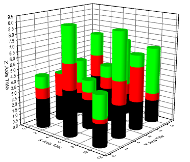

3D積上げ棒グラフ
3D-Stacked-Bars
- 
要求されるデータ
- 少なくとも1つのZ列（あるいは、その部分領域）を選択します。Z列に結びついたXY列がある場合、そのXY列が使われます。そうでない場合、ワークシートのデフォルトのXY値が使われます。
- または
- ワークシートセルのブロック（仮想行列）を選択します。
または、
グラフ作成
行列シートをアクティブにするか必要なデータをワークシート上で選択します。
メニューからを選択します。
または、
3Dおよび等高線グラフツールバーの3D 積み上げ横棒グラフボタンをクリックします。

テンプレート
- gl3DStackBar.OTP (OpenGLのみ)
(Originのプログラムフォルダにインストールされています。)
ノート
- Z値が各棒の高さを決めています。列/棒は、Z値に対してカラーマッピングされます。
- 行列/ワークシートの各行番号に対応づけられたY座標および列番号に対応づけられたX座標により、各棒のXY位置が決まります。
- XYZデータについては、同じXY座標のZ値は、Z方向に積み上げられます。行列データについては、現在の行列にあるすべてのオブジェクトが積み上げられます。
- 仮想行列からこのような3D積み上げ棒グラフを作成したい場合は、選択した仮想行列から一般的な3D棒グラフを作成し、レイヤ内容ダイアログで仮想行列をこのグラフに追加して、グループ化します。ここで、Xファンクションw2vmで前もって仮想行列を作成する必要があります。